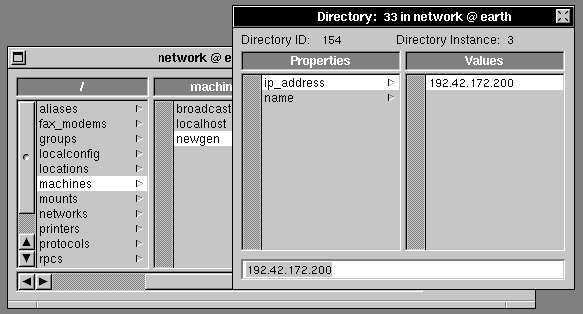
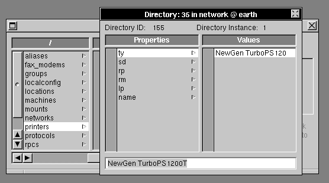
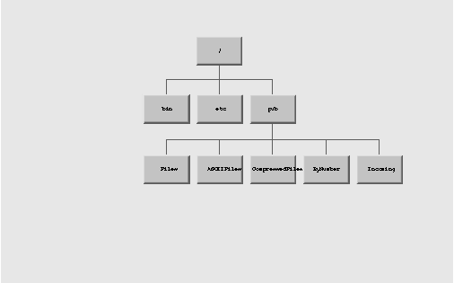

NEXTSTEP In Focus, Summer 1993 (Volume 3, Issue 3).
Copyright ©1993 by NeXT Computer, Inc. All Rights Reserved.
TIPS & TECHNIQUES
ADDING A TCP/IP PRINTER TO A NEXTSTEP COMPUTER NETWORK
Have you ever wanted to send a report or drawing directly to a powerhouse printer--one with camera-ready resolution, a speed-demon engine, and maybe even multiple paper trays? This article explains how to install a standalone printer on a NEXTSTEP network via TCP/IP.
Before you start...
To use this procedure, you must be using a NEXTSTEP Release 3.1 or later system. Also, the stand-alone printer you install must use the lpd protocol. Some TCP/IP printers don't use this protocol, and therefore won't work with this setup.
Is it a printer or a host?
A standalone printer--one that doesn't hang off a specific machine--is special in that it has a host name. When you configure a new printer in NetInfoManager, you usually set the rm property to be the host name of the remote print server computer, the computer the printer is attached to.
In setting up a standalone printer, though, you define the printer to be its own print server computer. Therefore, you set the host name of the remote print server (the rm property of the printers directory) to be the same as the name of the printer (the name property in machines).
Four steps to a hookup
Here is how to add a TCP/IP printer, using the example of a NewGen TurboPS/1200T printer:
| 1. | Set up your printer and Ethernet interface according to the printer's documentation. Then, connect the printer to the network. |
| 2. | Find or set the Internet address for the printer. Some printers require you to set the Internet address, while other are preset. Either way, make sure the Internet address doesn't conflict with that of other computers and devices. |
| 3. | Using NetInfoManager, add a new machines entry in the root domain. It should have two properties, name and ip_address. The value of name should consist only of alphanumeric characters. In our example, name is set to newgen, and ip_address is set to 192.42.172.200. |

Figure 1: Use NetInfoManager to add a new machines entry for the standalone printer.
| 4. | Also using NetInfoManager, add a printers entry in the root domain. Set these properties: |
| name is the printer name that's displayed in the Print panel. It must contain only alphanumeric characters. | |
| lp needs to be present in the directory, but doesn't need a value. | |
| lo gives the printer a resource lock. Its value must be "lock". | |
| rm is the name of the remote printer's server. Set it to be the same as the name property in Step 3. | |
| rp is the remote printer's name. | |
| sd is the directory that print jobs spool in. Set it to /usr/spool/NeXT/printername. | |
| ty is the printer's type, usually the manufacturer's brand name, with underscores (_) substituted for spaces and percent signs (%) for slashes (/). See "Get the right printer description" to find out more about this property. | |
| _nxfinalform causes PostScript comments to be interpreted correctly. It needs to be present in the directory, but doesn't need a value. | |
| note is optional. Its value is displayed in the Print panel, and is useful for comments. |
For example, here are the settings for the NewGen TurboPS/1200T printer:
name = TurboPS1200T
lp =
lo = lock
rm = newgen
rp = TurboPS1200T
sd = /usr/spool/NeXT/TurboPS1200T
ty = NewGen_TurboPS1200T
_nxfinalform =
note = This is a NewGen printer.

Figure 2: Also use NetInfoManager to set the printer properties.
Making sure it works
Now that you've set up your TCP/IP printer, you need to check that it works properly.
Check that it's accessible
The first test is to confirm that the computers on the network can see the printer. For this, use the ping command. For example:
ping newgen 56 5
This example sends five information packets of 56 bytes each to the host newgen.
Look at the output of the ping command. The important information is "% Packet Loss" in the summary line. On a local network, this number should be 0.
Try to print
If the ping is successful, try sending a file to the printer using either enscript or lpr. The command enscript converts text files to PostScript format and sends them to the specified printer. For example, "enscript -Pnewgen hope.txt" prints a copy of the file hope.txt on the printer newgen.
The command lpr works similarly, but only for PostScript files. For example, "lpr -Pnewgen hope.ps".
Specify the right paper size
Some printers, such as the NewGen of our example, require a separate paper tray for each size of paper. The printer may have an auto-sensing device to detect the type of paper tray. If you select a paper size in the Print panel when the proper tray isn't there, the printer may begin the job and jam. The workaround for this is to select manual feed for non-standard paper sizes.
Check that fonts are listed
The NEXTSTEP spooling filter supports automatic font downloading and printer feature inclusion, such as paper tray switching. For standalone PostScript printers, fonts are included at the beginning of the PostScript stream if they are needed. The print job uses "%%DocumentFonts:" and "%%DocumentNeededFonts:" PostScript comments to declare which fonts are needed.
If you have problems with fonts, make sure that there's a "%%DocumentFonts" or "%%DocumentNeededFonts:" PostScript comment in the header or trailer of the file you're printing. Then try using fontloader. (See the UNIX manual page.)
Get the right printer description
The ty property for the printer serves two purposes:
| It indicates the printer's type in the Print panel. | |
| It tells NEXTSTEP which .ppd file to use. |
"ppd" stands for "PostScript Printer Description." This file knows about the special features of your particular printer, such as extra paper trays or the ability to switch among various printing resolutions. After putting this file in the proper place, you can access your printer's capabilities directly from the Print panel. NEXTSTEP uses standard version 4.0 Adobe .ppd files. The ty property setting for the printer is the same as the .ppd file name with blanks instead of underscores and percents (%) instead of slashes (/), and without a ".ppd" extension.
.ppd files are the same for NEXTSTEP, Macintosh, and DOS systems. If there's no NEXTSTEP .ppd file for your printer, copy one from another platform. Be sure it's version 4.0 format--the version number is listed at the top of the file. (.ppd files are plain ASCII text files, so you can look at them with Edit.) Put .ppd files in /LocalLibrary/PrinterTypes, /NextLibrary/PrinterTypes/your_language.lproj, /HostLibrary/PrinterTypes, or ~/Library/PrinterTypes.
Incidentally, the reason TCP/IP printers can't be properly installed in pre-3.1 systems is that in those systems the .ppd files are ignored. As a result, fonts aren't downloaded automatically, paper trays aren't selected correctly, and so on.
For more info...
That's it! Your standalone printer should be up and running. For more information on topics covered in this article or related areas, such as modifying .ppd files, check out the following sources:
Adobe Systems Incorporated. Programming the Display Postscript System with NeXTSTEP. Menlo Park, CA: Addison-Wesley, 1992.
McGilton, Henry. PostScript by Example. Reading, MA: Addison-Wesley, 1992.
NeXT Computer, Inc. "Printers and Printer Troubleshooting," NEXTSTEP Network and System Administration. Menlo Park, CA: Addison-Wesley, 1992.
NeXT Computer, Inc. "Printing," NEXTSTEP 3.0 Release Notes. Redwood City, CA: NeXT Computer, Inc., 1992.
Also see the UNIX manual pages for printcap, lpr, enscript, and fontloader.
Special thanks to Bob O'Connor for this great tip! Bob is an independent NEXTSTEP and Macintosh consultant in Washington, DC. He can be reached by e-mail at
justbob@andi.org and by telephone at (703) 207-9438.
GETTING NEXTANSWERS BY FTP
In addition to fax and e-mail, there's a new way to get information from NeXTanswers--ftp. ftp is a program that lets you transfer files using File Transfer Protocol. Nearly all of the same NeXTanswers files are available by ftp, e-mail, and fax. (The only exceptions to this rule are the entries in the directory Software_&_Examples, which are available by e-mail and ftp, but not by fax.)
To use ftp to get files from NeXTanswers, your network must be connected to the Internet, or you must log into a computer that's on the Internet.
If you've never used ftp before, here's a quick primer on how to use it to get NeXTanswers files. However, ftp has many more commands and features than those described here. To find out more about it, see the ftp(1) UNIX manual page.
Starting a session
To get NeXTanswers files by ftp, type the following command at a Terminal prompt:
ftp ftp.next.com
This starts an ftp session connected to the computer ftp.next.com, here at NeXT.
When you're asked for an account name, type "anonymous". In place of a password, type your e-mail address.
Here's a sample session, with the user input in bold:
bang> ftp ftp.next.com
Connected to ftp.
220 ftp FTP server (Version 5.1 (NeXT 1.0) Thu Apr 29, 1993) ready.
Name (ftp.blues.com:jstarr): anonymous
331 Guest login ok, send ident as password.
Password:
230 Guest login ok, access restrictions apply.
ftp>
The password isn't echoed on the screen; in this example, it was "jstarr@blues.com".
What's happening is that you're logging into a guest account, anonymous. Because lots of people use this account, you enter your e-mail address at the "Password:" prompt to voluntarily identify yourself. We use this information to gather statistics on NeXTanswers usage. This style of using ftp is called anonymous ftp.
Once you've logged in, ftp prompts you to enter commands.The ftp prompt is "ftp>".
Tip: You can set up a .netrc file in your home directory to make using ftp easier. The .netrc file can supply your name and password to the remote ftp server automatically, and you can define macros in it for steps you perform often. See the UNIX manual page for ftp(1) for more information.
Getting help
While you're using ftp, you can get a list of commands by typing "help" or "?" at the ftp prompt. To get help on a specific ftp command, type "help command" or "? command".
Working with the NeXTanswers directories
The NeXTanswers files are organized in several directories. The current directory hierarchy is shown in Figure 3. When you first connect, you're in the / (root) directory. The NeXTanswers files are in directories in /pub.

Figure 3: The current NeXTanswers directory hierarchy
What's in the directories
The files are stored several ways:
| Files contains the files in their original formats, such as Rich Text and PostScript. | |
| AsciiFiles contains plain text versions of the files. You might want to use these versions if you aren't using NEXTSTEP. | |
| CompressedFiles contains the original files, compressed with the same kind of compression used by Workspace Manager. These files are smaller and faster to transfer. | |
| ByNumber contains numbered links to the compressed files. The numbers match the numbers in the NeXTanswers index, so you can select files to transfer by index number. |
The pub directory also contains three special files. README gives instructions for using ftp, 1000_Help gives instructions for using NeXTanswers in general, and 1001_Master_Index is an index to the NeXTanswers files.
Changing remote directories
To change your current directory on the NeXTanswers computer, use cd. For example:
cd NEXTSTEP_In_Focus
To see the path of the current remote directory, use the command pwd.
Displaying remote directory contents
To list the contents of a directory, use dir or ls. ls displays an abbreviated list.
Changing local directories
When you transfer a file, it's put in the current directory on your local computer. To change your current local directory so that you're putting files in the right place, use the lcd command, which works just like cd does locally. For example:
lcd Library/NeXTanswers_files
Transferring files
To get a file, change to the directory that contains the file, then transfer the file. The file is copied to the current directory on your local computer.
Setting transfer mode
ftp has several modes of transferring files. You set the transfer mode to make sure that ftp translates files correctly between character sets, file systems, and so on.
The two transfer modes you need for NeXTanswers files are ASCII and binary. ASCII is for transferring plain text files, while binary is for non-ASCII files like .rtfd and compressed files. The default transfer mode is ASCII. Select the mode you want with the commands ascii and binary. Binary mode can actually transfer ASCII files correctly, so it's easiest to just transfer everything in binary mode.
Making the transfer
To transfer a single file, use the command "get remote-file [local-file ]". For example:
get Dell_DGX.rftd
The local file name is optional. If you don't specify it, ftp gives your copy of the file the same name as the NeXTanswers file.
You get the numbered files from the ByNumber directory in the same way:
get 1154.compressed
Important: Remember to transfer .rtfd and compressed files in binary mode.
To transfer several files at once, use the command "mget remotefiles". ftp expands remotefiles on the remote computer and transfers each file whose name matches. For example:
mget Adaptec*
This example transfers all files in the current NeXTanswers directory that start with "Adaptec".
Note: Don't use mget to transfer entire directories. Because .rtfd files are actually directories, you shouldn't use mget to transfer them.
Aborting a file transfer
If you start transferring a file and want to stop before the transfer completes, press the terminal interrupt key or key sequence--usually CTRL-C. ftp stops sending files as soon as possible. This doesn't end the ftp session.
Ending the session
When you finish getting files from NeXTanswers, type "bye" or "quit" to end the session and exit ftp.
Staying up to date
NeXTanswers sometimes changes as we respond to your feedback. To keep informed of changes and additions to the system, get updated versions of the README, NeXTanswers_News, help, and index files occasionally. In particular, README and NeXTanswers_News describe important changes to the directory structure and other features that you should know about.
If you have trouble...
If you have problems using NeXTanswers by ftp or any other means, send e-mail explaining the problem to NeXTanswers-request@next.com.